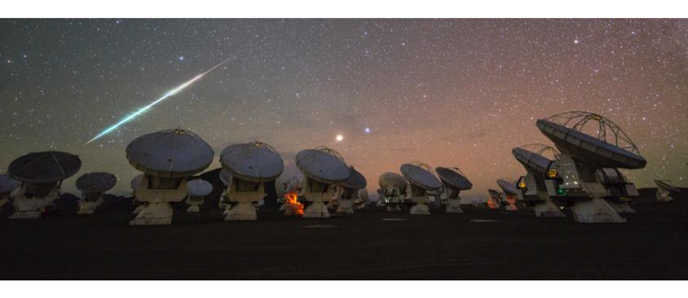
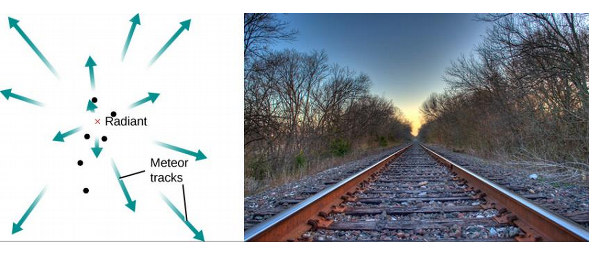
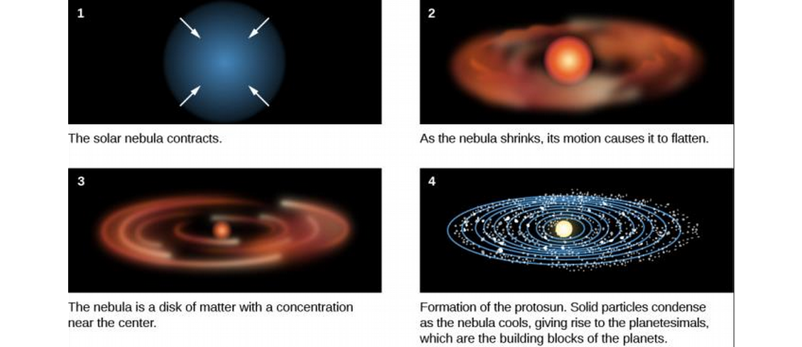
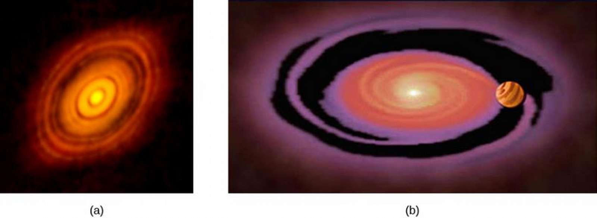
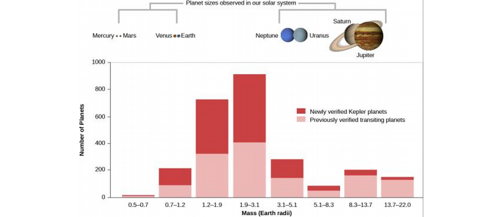
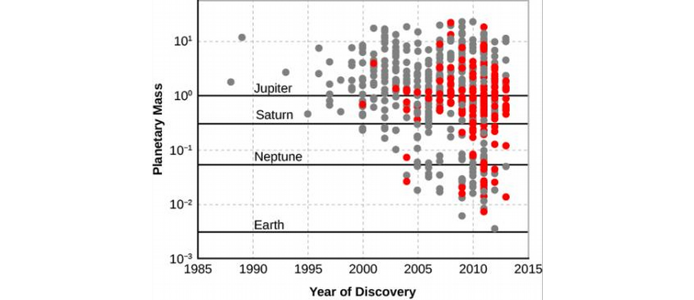
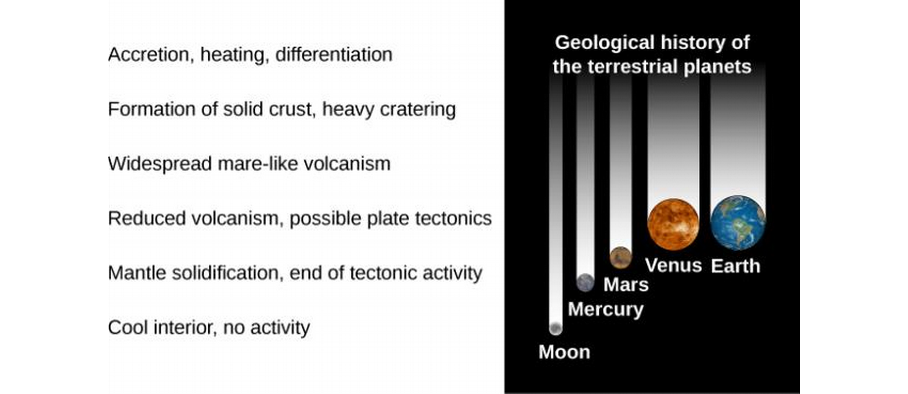

ASTR101 Ch 13-14
Ch 13 - Comets and Asteroids: Debris of the Solar System
Asteroids
Discovery and Orbits of the Asteroids
- Asteroids are smaller than planets, up to nearly 1000 km in diameter.
- They have a number (in order of discovery) and a name.
- They revolve around the Sun in the same direction as planets, and most share the orbital plane of the Solar System.
- In 1918, Japanese astronomer Kiyotsugu Hirayama sorted some asteroids into families with similar orbits, whose members may have come from the same collision or were once parts of a larger body.
- Over 75% of known asteroids are in the asteroid belt between the inner and out planets. Objects over 1 km in size are spaced several million kilometers in the asteroid belt.
Composition and Classification
- Spectral analysis shows darker (<4% reflective) asteroids are primitive, composed of silicates and organic compounds; they are called C-type (carbonaceous) asteroids.
- These darker asteroids make up the majority, and the outer edge of the asteroid belt consists of mostly C-type asteroids.
- The second most common asteroid family are S-type (silicate) asteroids, with stony bodies, which are more reflective.
- Third most numerous are the M-type (metallic) asteroids. A single 1-km M-type asteroid could supply the Earth with metal for the foreseeable future!
- M-type asteroids come from cores of differentiated parents.
Asteroids Up Close
- Recall that we can analyze the composition of an asteroid by looking at its spectrum and with radar measurements of reflectivity.
- One asteroid, Vesta, is not only differentiated but was even once volcanically active, despite its small size (500 km).
- We can date asteroid surfaces by analyzing crater counts.
- When we observe asteroids orbiting each other, we can deduce the mass through Kepler's third law.
- Meteors sometimes fall to Earth from Asteroids, and many missions have been carried out to analyze and bring back samples from asteroids, successfully.
The "Long-Haired" Comets
Appearances of Comets
- Unlike an asteroid, a comet is a smaller chunk (a few kilometers in diameter) of ice which develops its own atmosphere as it approaches the Sun.
- Unlike a meteor (shooting star), which burns up in our atmosphere in a few seconds, a comet remains visible for a couple of weeks to several months.
Comet Orbits
- Newton is recorded as the first to suggest that comets orbit the Sun on large ecliptic orbitals.
- In 1705, Edmund Halley published calculations of 24 comet orbits, noting that comet appearances in 1531, 1607, and 1682 were similar enough to be the same comet making a 76-year orbit.
- He correctly predicted it would return in 1758; the comet, whose recent returns were in 1986 and next in 2061, was named after him.
Figure 3: Comet Halley (like "valley"), composite of RGB taken at different times/angles.
- Comets measurable in a lifetime are short-period comets, with periods less than a century; these are few.
- Most comets have periods of thousands of years, if they return at all.
- long-period comets come from a different source than the Jupiter comets.
The Comet's Nucleus
- When we see a comet, we typically see the illuminated gas atmosphere, called the head or coma.
- This atmosphere escapes all the time because of its weak gravity, replaced by the material in the solid nucleus, a few kilometers across (not to be confused with the atomic nucleus).
- The modern theory of the nucleus comes from Fred Whipple in 1950; the nucleus is a "dirty snowball", consisting of kilometers of water ice and other ices mixed with silicate grains and dust.
- The illuminated gas prevents us from seeing the nucleus, but dust samples give us some insight into their composition.
The Comet's Atmosphere
- The comet being made of ice heats to 200 K typically when it reaches Mars, vaporizing and releasing the mixed dust.
- The diameter of this evaporated gas can be as big as Jupiter and up to nearly a million kilometers.
- The comet also has a tail, which points away from the Sun.
- Comets have two tails, a dust tail, and an ion tail. The dust tail is brighter than the gas tail, which is straight and made of ionized gas. The ionized tail is pushed outward from the Sun by Solar winds.

The Origin and Fate of Comets and Related Objects
The Kuiper Belt and the Oort Cloud
- The kuiper belt is a large area beyond Neptune which is the source of short-period comets.
- The comets can be pulled into the solar system through gradual shifts in their orbit by Neptune.
- What about long-period comets?
- The gravitational sphere of influence of a star is the area where the gravity an object feels is mainly from that star.
- Within the gravitational field of influence of a star, the star can hold onto objects and keep them in its orbit.
- This sphere of influence extends out about a third of the distance to other stars—for the Sun, about 50,000 AU (~1 Ly).
- Long-period comets, however, come from very great distances with approximate aphelions of 50,000 AU, in the Oort cloud, discovered by Dutch astronomer Jan Oort.

- Jan Oort suggested that new comets are objects on the edge of the Sun's gravitational field of influence which are pulled into the solar system by gravitational disturbances from other stars.
- This body of 1012 comets at the edge of the Sun's sphere of influence is called the Oort cloud.
The Fate of Comets
- Comets live out most of their lives in the Oort cloud or Kuiper belt at temperatures near 0 K.
- If the comet survives passing near the Sun, it could return to the orbit it came from.
- It could also collide with the Sun.
- Or it could interact with a planet, either hitting it (ending its life), stealing its gravity (flinging it out of the solar system entirely), or change into a shorter orbit.
- In the last case, it will keep losing its material on each approach near the Sun until its death.
- Some comets break apart, sometimes spontaneously.
Ch 14 - Cosmic Samples and the Origin of the Solar System
Meteors
Observing Meteors
- Meteors are tiny solid particles that enter Earth's atmosphere from interplanetary space.
- Ices in comets evaporate close enough to the sun, sending tons of rocks that may enter Earth's atmosphere as meteors (colloquially known as shooting stars).
- Colliding asteroids also create a lot of rocks and debris which may enter Earth's atmosphere as a meteor.
- Air friction vaporizes meteors, usually at altitudes of 80-130 km, giving a flash of light.
- Typical meteors less than 1 gram (a pea), but their high velocities cause a giant streak of heated, glowing gas around them.
- A meteor the size of a golf ball produces a much brighter trail called a fireball.
- A bowling ball-sized meteor can even survive the atmosphere if it's going slow enough.

Figure 7: Fireball
- Visible meteors must be within altitude of 200 km.
- On a typical dark, moonless night, a sporadic meteor—a meteor not associated with a meteor shower—is visible on average every 10 minutes.
- 25 meteors per day will light up the night sky each night somewhere on Earth.
- About 100 tons/day of meteoric material enters Earth's atmosphere!
- Observing meteors is an easy way to get into Astronomy—no telescopes or fancy tools needed! See p. 498 for some observing tips.
Meteor Showers
- When a comet break apart, the result is tons of rocks and debris that can enter Earth's atmosphere as meteors.
- These meteors often take on the previous path of the comet!
- They move together but spread out over the orbital path.
- When Earth crosses such an orbital it results in a meteor shower, a collection of meteoric activity.
- Meteor showers usually last several hours.
- No shower meteor has ever survived the atmosphere for study, but we can learn some things about their flight paths.
- For example, they are light and porous with densities of 1.0 g/cm\up3, and would probably break apart if you put them on a table just from gravity.
- Since they're moving together, we observe them as coming from the same point, known as the radiant (just like railroad tracks seem to come from the same point)

Meteorites: Stones from Heaven
- Any fragment of interplanetary debris surviving Earth's atmosphere is called a meteorite.
- Thousands of meteorites fall all over Earth each year, many in bunches as pieces of a larger object.
- Meteorites carry a remarkable record of the formation and early history of the Solar System.
Extraterrestrial Origin of Meteorites
- Until 19th century, meteorites not accepted to be from space!
- History of extraterrestrial rocks difficult to ascertain, difficult separating supernatural myth from fact.
- 1803, well observed fall analyzed by French physicist Jean-Baptiste Biot resulted in acceptance of stones falling from sky.
- Meteorites sometimes fall in groups, or showers.
- A meteorite shower has nothing to do with a meteor shower; the former is an object breaking in the atmosphere to cause many meteorites, the latter is a comet breaking in outer space resulting in a lot of meteors.
Meteorite Falls and Finds
- Meteorites can by found by their fireballs if they reach low enough altitudes.
- Meteorites most often do not cause fires on the ground; they're ice-cold in space, and despite its fiery fall, most o fits interior remains cold after falling. More likely to cause frost!
- Sometimes, people find weird rocks that are determined to be meteoritic, termed meteoric finds.
- Samples are sent to experts to be divided into meteorites and meteorwrongs.
- Yes, really.
- Meteorites found in Antarctica resulting from motion of ice.
- Meteorites get buried in ice and slowly carried to regions where ice is gradually worn away, where other meteors are found.
- This process concentrates the meteors in a spot on the surface. Thanks Antarctica!
- Meteorites classified into irons (composed of nearly pure nickel-iron), stones (of silicates or rocks), and stony-irons (a mixture).
- Metallic meteorites are the easiest to recognize as iron doesn't occur in its pure form on Earth, usually being found as an oxide. Most meteorites are stone, which requires lab analysis to identify.
- Meteorites also classified into primitive and differential meteorites, based on whether the parent bodies that broke up into multiple meteorites were molten before breaking up into multiple meteorites.
Ages and Compositions of Meteorites
- Meteorites aged by radioactive dating to be oldest and most primitive materials available on Earth.
- The most primitive meteorites are measured to be 4.56±.01 billion years old, which is taken to represent the age of the solar system, the time since the first solids condensed into larger bodies.
The Most Primitive Meteorites
- Spectral analysis suggests the parents of primitive meteorites to be asteroids.
- Some meteorites are carbonaceous (C-type) meteorites, meaning they contain carbon or other complex organic (carbon-based) molecules. Some contain chemically bound water.
- The Murchison meteorite is a carbonaceous meteorite that fell in Australia in 1969 and was analyzed to have found organic molecules including 16 amino acids (the building blocks of proteins), 11 of which are rare on Earth, in equal parts of left- and right-handed molecular symmetry. This ensures extraterrestrial origin as Earthly amino acids have evolved exclusively in the left-handed symmetry.
- Raises possibility of Earthly life being delivered to Earth from meteorites and comets.
Formation of the Solar System
Observational Constraints
- We now combine the observations of the planets as well as asteroids, comets, and meteorites to determine the formation of the Solar System.
- Observational constraints categorized into motion constraints, chemical constraints, and age constraints, that a theory of Solar System formation must meet.
- Jupiter and Saturn have large enough gravities to hold on to any gas when they formed, so the gases they compose are likely representative of original solar system material.
- Planetary composition starts with metals near the Sun, then rocks a little farther, and finally, the lightest ice-dominated outer planets, according to decreasing temperature from Sun.
- Then, ice brought to Mercury and Moon probably by comet impacts.
- Radioactive dating shows Earth rocks as old as 3.8 billion years, and Moon rocks around 4.4 billion years old, while primitive meteorites are all around 4.5 billion years old. This suggests the formation of planets and cooling of their crusts within a timespan of at most tens of millions of years.
- Primitive meteorites are made primarily of material condensed or coagulated from a hot gas after the hot-vapor stage of 4.5 billion years ago.
The Solar Nebula
- Observations are consistent with the Solar System forming from a rotating cloud of vapor and dust, the Solar Nebula, which collapsed and differentiated under its own gravity.
- This increases its orbital speed, according to conservation of angular momentum. While the "poles" don't move much, the "equator" moves a lot with the spin of the cloud, causing it to collapse to a flat disk (the plane of the planets!).
- As the cloud cools, the central dense material forms a star which supplies its own energy, with the flat disk slowing down due to frictional forces—some of it falling into the central star (the Sun), some of it continuing to rotate with the disk.

- The temperature is now hot in the center (where the star provides energy) and cold farther out. Gases begin to interact chemically in this environment, producing compounds which condense into liquid or solid grains.
- Different compounds form depending on local temperatures. Innermost planets, for example, never had low enough temperatures for ice and carbonaceous organic combounds to condense.

Formation of the Terrestrial Planets
- The condensation continued into larger chunks a kilometer to tens of kilometers in diameter called planetesimals, some of which still survive as comets and asteroids. Planetesimals are still much smaller than planets.
- Some planetesimals grew through accretion—attracting other material such as planetesimals gravitationally to grow—into protoplanets, which are not quite planets.
- As protoplanets continued accretion of planetesimals, they kept getting hit with projectiles that melted in the heat of the collision and caused some of the protoplanet to melt, until the entire protoplanet is heated above the melting temperature of rocks, resulting in differentiation. This process robs the inner planets of some of their lighter gases.
Formation of the Giant Planets
- Outer solar system protoplanets could gather available ices as well, and grew much larger than inner planets. The outer protoplanets grew to have masses ten times larger than Earth's.
- Though they heated more than the inner solar system planets, the outer planets didn't accrue enough heat to sustain nuclear reactions that define stars.
- The end of this period of formation is marked by the planets having accrued most of the available nebula mass, with the solar winds throwing out the remaining.
Further Evolution of the System
- This entire process took place over a few million years, and we still have some evolution to cover.
- Planetesimals that didn't form planets became comets, many of which are in the Oort cloud, and some of which are in the Kuiper belt with their icy dwarf planet friends. The latter may have been in orbit of Uranus and Neptune but ejected from their initial orbits by the giant planets' gravity.
- During this period of time, giant impacts stripped Mercury of part of its mantle and crust, reverse the rotation of Venus, and broke off part of the Earth to create the Moon.
- Giant planets stirred up the movements of material, resulting in lighter materials reaching and striking the terrestrial planets as well. This results in the terrestrial bodies accumulating water and organic compounds.
- Two regions allowed stable orbits of planetesimals; the asteroid and Kuiper belts. These are what we call asteroids and comets.
- This early evolution was thought to yield today's solar system until recent studies which suggest that more violent events caused Jupiter and Saturn to change orbits to control the distribution of asteroids from reaching the inner solar system; this may explain the period of heavy bombardment recorded in the oldest lunar craters.
Comparison with Other Planetary Systems
Discovery of Other Planetary Systems
- Turns out our solar system is not typical!
- Half of the time, the nebula collapses into multiple protostars—young stars still gathering mass from their molecular clouds—forming a binary of multiple-star system.
- In all cases, angular momentum is conserved, and the result is a circumstellar disk such as the Orion nebula, shown without and with a filter of the nebula dust below:

- When we see gaps in the protoplanetary disk, this suggests the existence of protoplanets, though they are too small and faint to be directly seen, as innewborn star HL Tau shown below with its simulation:

Discovering Exoplanets
- Recall exoplanets are planets outside of the solar system.
- Exoplanets are very difficult to observe despite scientific advancements because they are dim and the stars they orbit are very bright. The best techniques to detect exoplanets therefore focus on the star.
- We can detect the movement of stars towards or away from us, as well as their radial velocity using the Doppler Effect. But we can also use this effect to detect tiny changes in the radial velocity star caused by the gravitational pull of very large planets. This method can be used to detect entire planetary systems, as long as the planets are large enough and close enough to the Sun.
- The second method has to do with the planet transiting, or crossing the face of the star to an Earthly observer, from which we can measure the size and orbit of a planet. This favors large planets with fast orbits.
- the Kepler space observatory's purpose is to star the night sky, monitoring the light of 150,000 stars in a single part of the sky to search for exoplanets.
- In two decades we went from no knowledge of exoplanets to a catalogue of thousands of exoplanets. Most are larger or more massive than Earth, but this is observational bias, which when accounted for, indicate that smaller planets are less common.
- Also common are super Earths, which are 2-10 times Earth's mass.
- A quarter of stars seem to have exoplanet systems, implying 50 billion planets in our Galaxy alone.

Figure 13: Planets found using the transit method.
The Configuration of Other Planetary Systems

Figure 14: Planet discovery by year based on mass. Gray dots are radial velocity measurements, red dots are transit stars.
Comparison Between Theory and Data
- Sometimes data surprises us and we have to revise our theories.
- One example is "hot Jupiters", giant planets that are closer to their stars than Mercury's orbit! We still need the condensation of water ice for such a massive planet, which can't occur so close to the Sun. The accepted explanation is that planets can migrate within the protoplanetary disk, planet migrations.
- Another example is high eccentricities among exoplanets, further supporting that planets can change each others' orbits.
- One explanation for planetary migration is that the protoplanet is moving faster than the nebula dust, which slows it down, which decreases its orbital radius; though it's unclear how some stop before plunging into their star(s).
Planetary Evolution
| Past (Gy) | Event(s) |
|---|---|
| 4.5 | Solar System starts forming, giant impacts. |
| 4.4 | End of giant impacts, start of cooling. |
| 4 | Evolution calms down, remaining debris impacts. Planets begin their own evolutionary courses. |
Geological Activity

Figure 15: Stages of geological history of a terrestrial planet.
- The Moon and Mercury likely died 3.3 billion years ago.
- Mars is a dying planet.
- Earth and Venus are the largest and most active.
Elevation Differences
[Covered in previous chapters.]
Atmospheres
[Covered in previous chapters.]